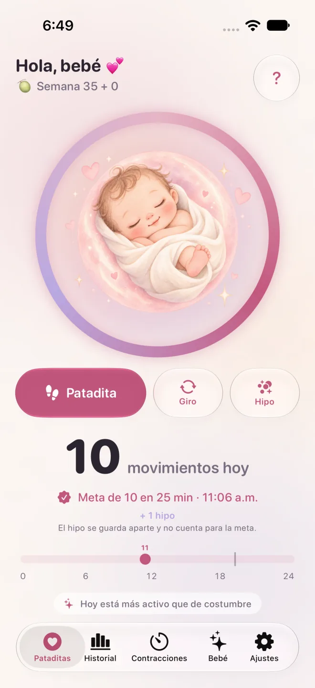

Pataditas / Conteo de movimientos del bebé
Contar las patadas del bebé: cuándo empezar, qué es normal y cuándo ir al hospital
Muchas embarazadas se preguntan cuántas patadas son normales, cuándo empezar a contarlas y cuándo ir al hospital. Aquí reunimos lo que dicen el IMSS, Count the Kicks (Estados Unidos) y el NHS (Reino Unido) sobre los movimientos fetales, y te mostramos en qué coinciden y en qué no.
Respuesta rápida
- No existe un número de patadas que sea normal para todos los bebés. Lo que importa es el patrón habitual del tuyo y si cambia.
- Los métodos para contar varían: la guía clínica del IMSS menciona 10 movimientos en 2 horas, Count the Kicks propone medir cada día cuánto tardas en llegar a 10 desde la semana 28, y el NHS dice que no hace falta contar.
- Todas las fuentes coinciden: si los movimientos disminuyen, se detienen o cambian, ve a revisión de inmediato.
¿Cuántas patadas o movimientos fetales son normales?
No existe un número de patadas que sea normal para todos los bebés. La guía de práctica clínica del IMSS reconoce que no hay una definición clara de cuántos movimientos son “normales” y, como referencia, menciona un mínimo de 10 movimientos en un periodo de 2 horas. El NHS y el RCOG del Reino Unido dicen que no hay un número fijo: importa el patrón habitual de tu bebé.
Llegar a 10 no significa que tu bebé esté bien. La señal para ir al hospital es el cambio: que se mueva menos de lo habitual, más débil o que deje de moverse, hayas contado o no.
El RCOG explica que los bebés tienen periodos de sueño de 20 a 40 minutos, rara vez de más de 90, en los que normalmente no se mueven, y que la tarde y la noche suelen ser los momentos de más actividad. Los movimientos tienden a aumentar hasta la semana 32 y luego se mantienen más o menos igual, y debes seguir sintiéndolos hasta el trabajo de parto y durante él. Si la placenta está en la parte de enfrente del útero, pueden sentirse con más dificultad.
¿Cuándo se empiezan a sentir las patadas y cuándo empiezo a contarlas?
La mayoría de las mujeres siente los primeros movimientos entre las semanas 16 y 24, según el NHS; en el primer embarazo puede ser después de la semana 20. La guía del IMSS dice que el conteo puede sugerirse desde el tercer trimestre y, si el embarazo tiene factores de riesgo, desde las semanas 26 a 32 hasta el final. Count the Kicks propone empezar en la semana 28, o en la 26 si hay alto riesgo o embarazo múltiple.
Si a la semana 24 todavía no has sentido a tu bebé, el NHS indica avisar en tu control prenatal para que revisen su latido. Tu médico puede recomendarte otro momento u otro método: pregúntale en tu próxima consulta.
¿Cómo se cuentan las patadas del bebé?
Count the Kicks sugiere contar a diario, de preferencia a la misma hora y en un momento en que tu bebé suela estar activo: siéntate con los pies levantados o recuéstate de lado y cuenta cada movimiento hasta llegar a 10, midiendo cuánto tardas. Cuentan las patadas, golpecitos, piquetes y giros; el hipo no.
Con los días sabrás cuánto suele tardar tu bebé. Count the Kicks indica llamar a tu médico de inmediato si cambia la fuerza de los movimientos o el tiempo que tarda en llegar a 10. En Pataditas no hay cronómetro: tocas una vez por cada movimiento y la app agrupa tus toques y te avisa cuando registras 10 dentro de dos horas. Esa agrupación es una función de la app, no un diagnóstico ni una señal de que todo esté bien.
¿Por qué cambian las recomendaciones según el país?
Porque cada institución valora la evidencia de forma distinta. El IMSS y Count the Kicks describen contar hasta 10, mientras que el NHS y el RCOG del Reino Unido dicen que no hay un número fijo, que no es necesario contar y que no hay evidencia suficiente para recomendar una tabla de movimientos de rutina.
En lo más importante coinciden: si tu bebé se mueve menos de lo habitual, deja de moverse o cambia su patrón, hay que revisarlo de inmediato. Pregunta a tu médico qué método quiere que uses.
| País y fuente | Sobre contar | Cuándo pedir ayuda |
|---|---|---|
| México: IMSS | Su guía clínica describe el conteo de 10 movimientos en 2 horas como una prueba corta y dice que el conteo puede sugerirse desde el tercer trimestre. | Acude de inmediato al hospital, sin importar el día ni la hora, si los movimientos disminuyen o desaparecen. La guía clínica lista como signo de alarma la disminución o ausencia de movimientos por más de 2 horas después de la semana 28. |
| Estados Unidos: Count the Kicks | Medir cada día cuánto tardas en sentir 10 movimientos, desde la semana 28 (o la 26 si hay alto riesgo o embarazo múltiple). | Llama de inmediato si cambia la fuerza de los movimientos o el tiempo que tarda en llegar a 10; si no localizas a tu médico, ve al hospital más cercano. |
| Reino Unido: NHS, RCOG | No hay un número fijo y no es necesario contar; conoce el patrón habitual de tu bebé. El RCOG dice que no hay evidencia suficiente para recomendar una tabla de movimientos de rutina. | De inmediato si se mueve menos de lo habitual, deja de moverse o cambia su patrón, aunque sea de madrugada. |
¿El hipo del bebé cuenta como patada?
No. Count the Kicks no cuenta el hipo porque es involuntario. En Pataditas puedes registrar el hipo como un tipo aparte: queda en tu historial, pero no suma a los 10 movimientos. Si no sabes si sentiste hipo o un movimiento, pregúntale a tu médico.
¿Qué hago si mi bebé se mueve menos de lo habitual?
Acude de inmediato al hospital, sin importar el día ni la hora. El IMSS incluye la disminución o ausencia de movimientos de tu bebé entre los síntomas por los que hay que ir al hospital de inmediato, junto con sangrado o salida de líquido por la vagina, contracciones dolorosas antes de tiempo, dolor de cabeza constante, ver lucecitas, zumbido de oídos, hinchazón de manos o cara y dolor intenso en la boca del estómago.
El NHS indica no esperar al día siguiente aunque sea de madrugada y no usar aparatos caseros para escuchar el latido. Count the Kicks indica ir al hospital más cercano si no localizas a tu médico. No uses una app ni una meta de conteo para decidir si vas. Lee qué pasa cuando llegas a revisión.
¿Cómo encaja Pataditas y funciona en Apple Watch?
Pataditas es una app para iPhone y Apple Watch que registra los movimientos que tú sientes: tocas una vez por cada patadita, giro o hipo y guarda la hora y el tipo. No diagnostica nada, no puede decir si tu bebé está bien y no sustituye la orientación de tu médico.
En Apple Watch, la app complementaria (watchOS 26 o posterior) te deja tocar la pantalla del reloj cada vez que sientes un movimiento; agrega Pataditas a la carátula o al Smart Stack para entrar rápido. Los registros se sincronizan con el iPhone mediante tu iCloud privado, sin crear una cuenta. Contar es gratis.

¿Quieres el paso a paso? Lee Cómo contar las patadas del bebé con iPhone o Apple Watch.
Guías relacionadas
- ¿Tu bebé se mueve menos? Qué hacer ahora y qué pasa en la revisión
- Cómo contar las contracciones y cuándo ir al hospital
- Cómo contar las patadas del bebé con iPhone o Apple Watch
Autoría, fuentes y estado de revisión
Escrita por Luis Angel Lucatero Villanueva, fundador de Kaelux, la empresa que publica Pataditas. Esta página es información general, no consejo médico. No ha sido revisada por un profesional de la salud: cada afirmación médica viene de las fuentes de abajo, que verificamos por última vez el 10 de noviembre de 2026. La actualizamos cuando esas fuentes cambian. ¿Encontraste un error? Escríbenos a hola@rutmia.com.
- IMSS: ¿Cuándo debo acudir urgentemente al hospital? — la página no muestra fecha; consultada el 10 de noviembre de 2026.
- IMSS: Guía de Práctica Clínica IMSS-028-08, Control prenatal con atención centrada en la paciente (para profesionales) — actualización 2017; consultada el 10 de noviembre de 2026. Se usó para: el conteo de 10 movimientos en 2 horas, cuándo puede sugerirse el conteo y la evaluación ante disminución de movimientos.
- IMSS: Guía de Referencia Rápida IMSS-028-08, Control prenatal — actualización 2017; consultada el 10 de noviembre de 2026. Se usó para: la lista de signos de alarma, incluida la disminución o ausencia de movimientos por más de 2 horas después de la semana 28.
- Count the Kicks (EE. UU.): Preguntas frecuentes (PDF en español) — 2024; consultado el 10 de noviembre de 2026.
- NHS (Reino Unido): Your baby’s movements (en inglés) — última revisión de la página: 8 de julio de 2024; consultada el 10 de noviembre de 2026.
- RCOG (Reino Unido): Your baby’s movements in pregnancy (en inglés) — publicado en febrero de 2019; el RCOG indica que revisa esta información cada tres años, así que puede existir una versión más reciente; consultado el 10 de noviembre de 2026.
Fuentes en español: IMSS y Count the Kicks. El NHS y el RCOG publican en inglés.